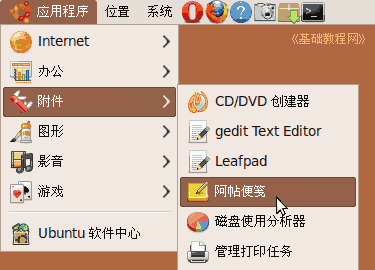
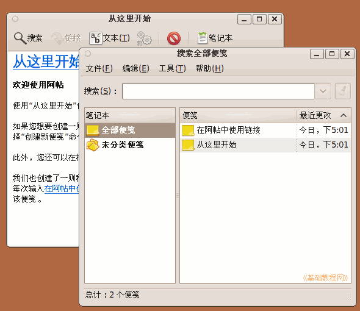
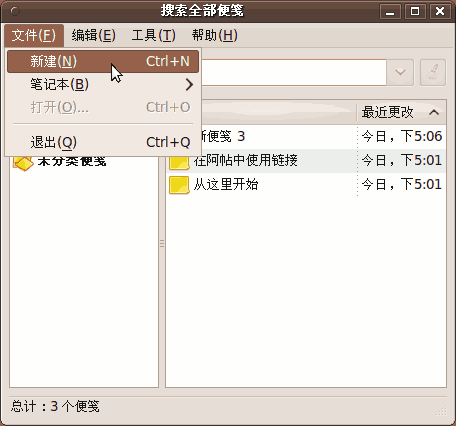
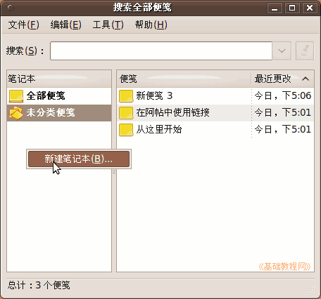
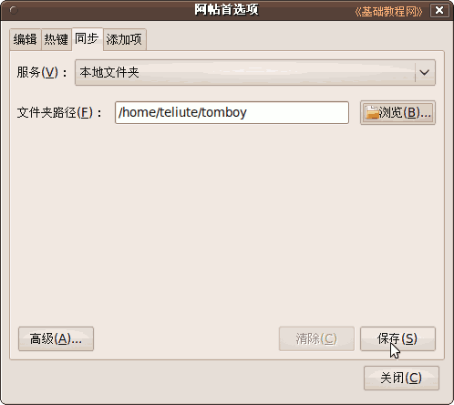
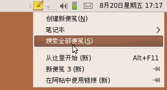

Ubuntu/GNOME 桌面程序指南
作者：TeliuTe 来源：基础教程网
五十九、阿帖便笺 返回目录 下一课阿帖便笺可以很方便地记录日常琐事；
1、阿帖便笺
1）点菜单“应用程序 - 附件 - 阿帖便笺”，打开窗口；

2）首次打开，会显示主窗口和一个“从这里开始”便笺窗口，在面板通知区域也有一个图标；

3）要创建一个新便笺，点菜单“文件 - 新建”，输入的内容自动保存；

4）在左侧栏空白处点右键，选“新建笔记本”可以创建便笺分类，
在新便笺的工具栏上，可以为它选择分类；

5）点菜单“编辑 - 首选项 - 同步 - 本地文件夹”，选一个文件夹然后点保存，可以备份便签到本地文件夹中；

6）要打开主窗口，在通知区域图标上点左键，选“搜索全部便笺”；

本节学习了阿帖便笺的基础知识，如果你成功地完成了练习，请继续学习下一课内容；
本教程由86团学校TeliuTe制作|著作权所有
基础教程网：http://teliute.org/
美丽的校园……
转载和引用本站内容，请保留版权信息和本站链接。